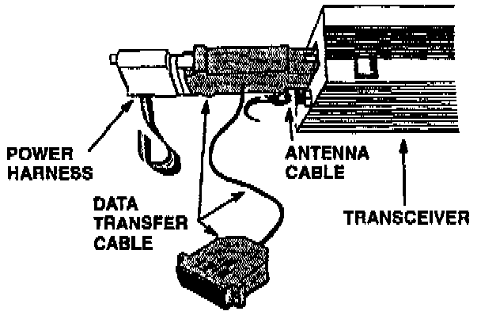
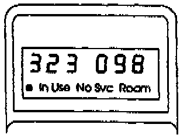
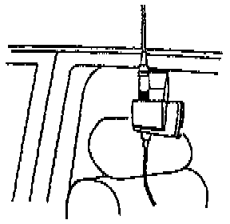
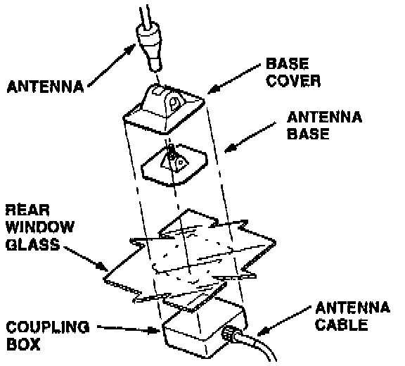

Static In A Call / Disconnects Calls
1. Does the problem occur at the same time and place?Yes - Explain to the customer that the problem is not hardware related. Call the phone service provider and ask if they're having problems. [ ]
No - Go to the next step.
2. Check the antenna connections at the transceiver (in trunk) and the coupling box (at rear window).
Are they tight?
Yes - Go to the next step.
No - Tighten the connectors and retest the phone.

3. Disconnect the power harness and connect data transfer cable (P/N 07MAZ-001010A) in series at the transceiver.
4. Turn the ignition switch to I (Accessory), and turn the phone on.

5. As soon as the NO SVC light on the handset goes off, write down the signal strength and channel number readings.

6. Turn off the phone and the ignition. Then connect the clip-mount test antenna and cable (P/N 07MAZ-001 020A) to the transceiver.
The [ ] "symbol indicates the end of troubleshooting for this symptom.
7. Turn the ignition and the phone back on. Does the signal strength differ from step 5 by more than 15?
Yes - Go to the next step.
No - The phone is not showing a problem. Trouble may be related to the cellular service.[ ]
8. Turn off the phone and the ignition. Then transfer the cable from the test antenna to the antenna on the rear window and repeat steps 4 and 5.
9. Turn the ignition and the phone back on. Does this signal strength reading differ from the one in steps by more than 15?
Yes - Replace the antenna cable between the transceiver and the rear window antenna.[ ]
No - Go to the next step.

10. Is the antenna base lined up with the coupling box?
Yes - Go to the next step.
No - Replace the antenna and align it with the coupling box.[ ]
11. Is the antenna base sitting on a defogger grid wire or a window antenna wire?
Yes - Replace the antenna, and mount it away from defogger and glass antenna wires.[ ]
No - Go to the next step.
12. Is the rear window tinted?
Yes - Remove the tint and attach the antenna base directly to the glass.[ ]
No - Replace the antenna.[ ]